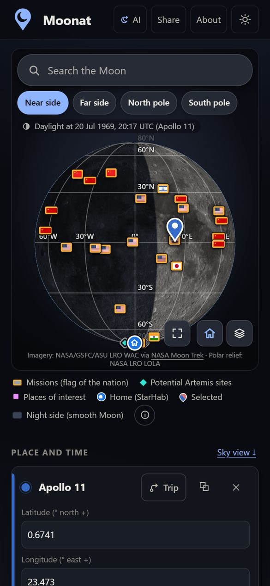

Moonat: making that next big leap easier. Lunar Landing Site Navigator
NASA Space Apps Challenge 2026 · Tel Aviv

shmonat.github.io/Moonat-Navigator
Moonat
The app
A map app for the Moon
- Pick places on a 3D globe, or search missions from Apollo to Beresheet.
- Suggested dates for the most sunlight, the best Earth contact, or an eclipse.
- Plan a rover trip: a start, an end and any number of stops.
- A first-person sky view over the real terrain, with a timelapse.
- Sun and Earth data: height, visible share of the disk, solar power, time to sunset.

Moonat
Next, new, and links
What's next, and try it now
Next
- Phone app in the app stores
The same views in your pocket, on site or in the control room - More worlds: Mars, Titan
The same sky and terrain engine
LiveAI mode
- Missionplain words to requirements
- Physicsvalidated code, run as tools
- Rankingsites and dates, best first
Claude, with your own Anthropic API key. Every number comes from Moonat's physics.

Built with AI coding agents (Claude Code), directed by the team. AI mode calls Claude at run time. Screenshots are real renders of the app.
Moonat